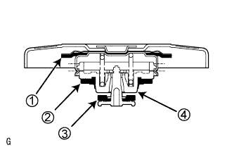
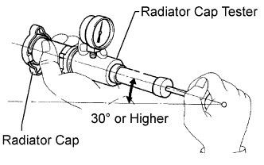

RADIATOR > ON-VEHICLE INSPECTION |
| 1. INSPECT RADIATOR CAP SUB-ASSEMBLY |
 |
Measure the valve opening pressure.
If there are water stains or foreign matter on rubber packing 1, 2 or 3, clean it by using water and finger scouring.
Check that rubber packing 1, 2 and 3 are not deformed, cracked or swollen.
Check that rubber packing 3 and 4 are not stuck together.
Apply engine coolant to rubber packing 2 and 3.
 |
Prepare a radiator cap tester, and tilt it more than 30°.
Pump the cap tester several times, and check the maximum pressure*.
| Item | Specified Condition |
| Standard value (for brand-new cap) | 93 to 123 kPa (1.0 to 1.3 kgf/cm2, 13.5 to 18 psi) |
| Minimum standard value (after using cap) | 79 kPa (0.8 kgf/cm2, 11.4 psi) |
| 2. INSPECT FINS FOR BLOCKAGE |
Check that the fins of the radiator core are not blocked with leaves, dirt, or insects.
If the fins are blocked, wash them with water or a steam cleaner.
| Injection Distance | Injection Pressure |
| 300 mm (11.8 in.) | 2942 to 4903 kPa (30.0 to 50.0 kgf/cm2, 427 to 711 psi) |
| 500 mm (19.7 in.) | 4903 to 7845 kPa (50.0 to 80.0 kgf/cm2, 711 to 1138 psi) |
Dry the fins with compressed air.